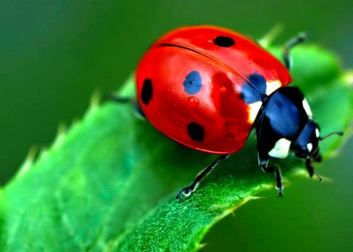

Como cheguei nessa ideia?
Pensando aqui sobre esse trabalho, pensei em possíveis soluções para melhorar a agricultura, e tive uma ideia interessante. E se pudéssemos criar uma nova espécie animal que combinasse as habilidades da abelha e da joaninha?
Bom, sabemos a eficiência das abelhas na polinização e a capacidade das joaninhas de controlar pragas, então... e se eu juntar essas duas?
Imagino que essa nova espécie poderia trazer uma série de benefícios para os agricultores. Traria uma polinização mais eficiente e ajudaria na produção de frutas, vegetais e flores, o que é essencial para a nossa alimentação. Além disso, ao ter a capacidade de controlar pragas de forma natural, poderíamos reduzir o uso de pesticidas químicos, tornando a agricultura mais sustentável.
Peguei uma abelha que está em extinção, aqui no Brasil, conhecida como uruçu-amarela e uma joaninha vermelha bem famosa por todos nós.
Melipona rufiventris

Melipona rufiventris também chamada de tujuba, teúba ou uruçu-amarela é uma abelha social brasileira, da tribo dos meliponíneos. Essa espécie apresenta o tegumento com a coloração variando do negro ao ferrugíneo com abundante desenho arruivado e corpo coberto de pêlos ferrugíneos/amarelados.
Coccinellidae

Joaninha é o nome comum dos insetos coleópteros da família das Coccinellidae. As espécies desta família, geralmente, têm o corpo semiesférico com élitros vermelhos sarapintados de manchas pretas
Como vou fundir os DNAs:
- Identificação de genes específicos: Identificar os genes de interesse em cada espécie que você deseja combinar. Isso poderia incluir genes responsáveis por características específicas que você deseja incorporar no organismo resultante.
- Isolamento de DNA: Extrair o DNA de uma abelha e de uma joaninha. Isso geralmente é feito a partir de amostras de tecido, como músculo ou antena.
- Edição de genes: Utilizar técnicas de edição de genes, como CRISPR-Cas9, para inserir, remover ou modificar os genes desejados nos genomas da abelha e da joaninha. Isso exigiria uma compreensão profunda da função dos genes e de como eles interagem.
- Criação de embriões híbridos: Após a modificação genética das células-tronco ou embriões das duas espécies, essas células modificadas seriam combinadas para formar embriões híbridos. Isso poderia ser feito em laboratório, mas novamente, é altamente especulativo e não necessariamente viável com a tecnologia atual.
- Desenvolvimento e criação: Os embriões híbridos seriam então cultivados até a fase adulta e cuidadosamente monitorados para avaliar qualquer alteração nas características resultantes da combinação dos genomas das duas espécies.
Características e seu Objetivo
Estou visualizando um animal com um tamanho semelhante ao de uma abelha, o que facilitaria o acesso às flores. Ele teria asas capazes de voar e visitar várias plantas, assim como as abelhas, e mandíbulas adaptadas para se alimentar de pragas, como os pulgões. E, é claro, manteria o comportamento social das abelhas, o que garantiria a eficiência na colônia.
 19.19.33_72359f55.jpg)
Criada por IA